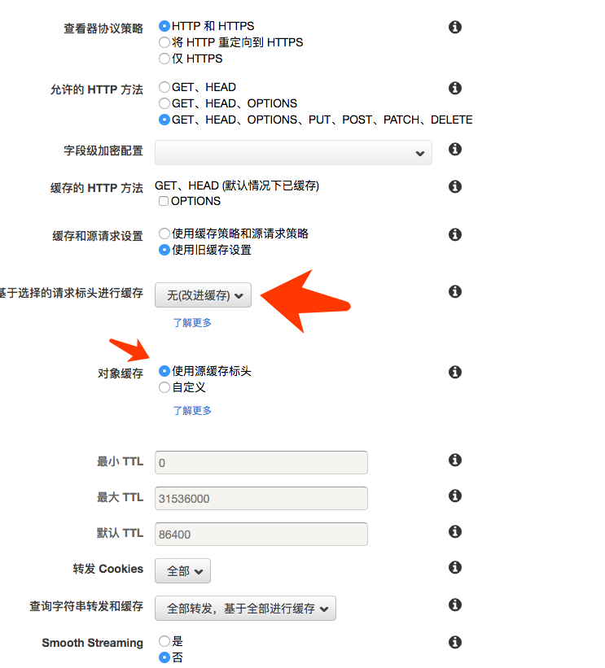
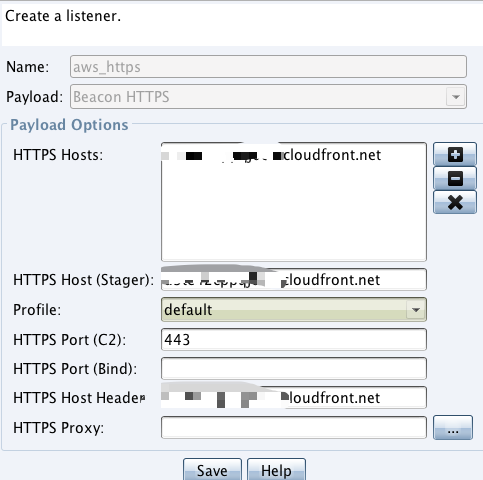

记录一下当使用Domain Fronting中使用https来上线时候的坑，因为查了半圈没有找到类似的资料，为啥非要https呢，因为node32对http的流量很敏感。
目标
- 使用
Windows/beacon_https/reverse_https作为上线的payload - AWS的
Cloudfront作为前置域名
准备工作
域名: example.com
VPS(Centos)
cloudflare(只作域名解析,不添加任何其他功能，不加CDN，不加HTTPS)
HTTPS的连通性
安装的apache是测试连通性，除此之外没有任何用处。
yum install httpd
systemctl start httpd
增加apache配置文件
#/etc/httpd/conf.d/vhost.conf
<VirtualHost *:80>
DocumentRoot /var/www/html
ServerName example.com
RewriteEngine on
RewriteCond %{SERVER_NAME} =example.com
RewriteRule ^ https://%{SERVER_NAME}%{REQUEST_URI} [END,NE,R=permanent]
</VirtualHost>
设置https
运行脚本HTTPsC2DoneRight.sh生成对应需要的文件，比如letsencrypt、amazon.profile等文件，这个时候https会自动设置成功，测试如下:
curl http://example.com
curl https://example.com
这时候会生成https通信需要的证书文件，一般是通过自签名Letsencrypt申请下来的：
./letsencrypt-auto certonly --standalone -d 域名 --email 邮箱（可匿名）
openssl pkcs12 -export -in fullchain.pem -inkey privkey.pem -out pkcs.p12 -name 域名 -passout pass:ABcd123456
keytool -importkeystore -deststorepass ABcd123456 -destkeypass ABcd123456 -destkeystore keystore.store -srckeystore pkcs.p12 -srcstoretype PKCS12 -srcstorepass ABcd123456 -alias 域名
生成的keystore是后面设置CS配置文件的时候使用。
设置CloudFront
标红的点特别注意，要改成这个样子，否则测试失败。更改之后发布，测试此时的CloudFront是否生效:
curl https://<example>.cloudfront.net
curl http://<example>.cloudfront.net

设置Profile
生成Profile，上面生成的amazon.profile测试上线失败。
cd && git clone https://github.com/bluscreenofjeff/Malleable-C2-Randomizer && cd Malleable-C2-Randomizer
python malleable-c2-randomizer.py -profile Sample\ Templates/Pandora.profile -notest
cp pandora_<random>.profile /root/cobaltstrike/httpsProfile/
修改profile
- 把amazon.profile的最后四行设置https的添加到pandora_
.profile里面。 - 修改
pandora_<random.profile里面的Host，改为aws申请下来的加速域名。 - 在profile文件最后新增配置：
https-certificate {
set keystore "keystore.store";
set password "1234565";
}
http-config {
set trust_x_forwarded_for "true";
}
设置CS
systemctl stop httpd //关闭apache
./teamserver <IP> <Pass> <path to pandora profile>
新建一个listener:

查看CS的WEBlog:
curl https://cloudfront.net/Hello
在weblog里面查看到对应的请求即设置成功。